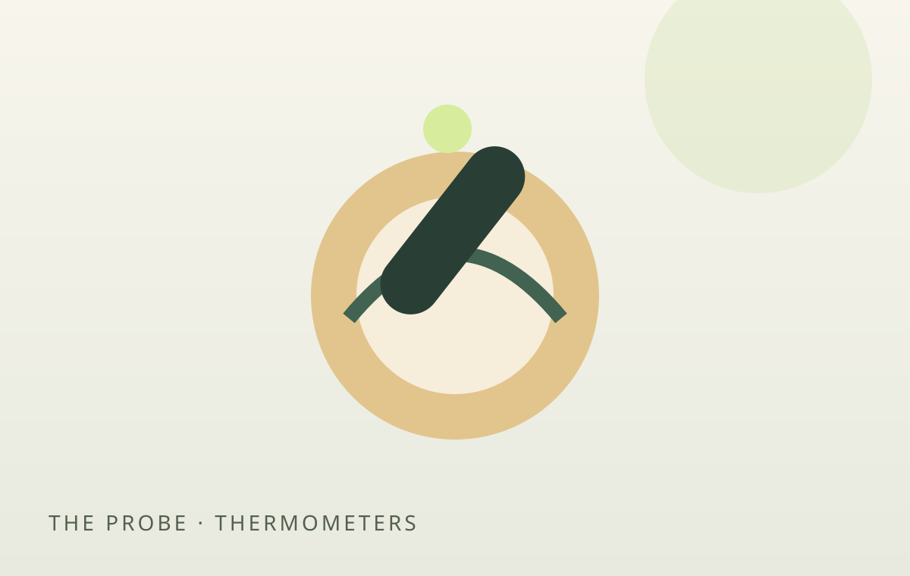

Questions first, checkouts second
Every guide answers the question you'd ask a friend — with method and sources, not a “top 10” someone else guessed at. New guides appear in the RSS feed the day they ship.
Air fryers, dual baskets, oven-style

Basket or oven-style air fryer: what should you compare?
Choose a format by matching it to the way you cook — not by assuming one style is universally better.
Read the guide ↗A no-hype checklist for comparing air fryer capacity
Measure the food and the space — not just the number printed on a product page.
Read the guide ↗Cleanup and counter space: the trade-offs to assess
The daily friction decides whether the appliance gets used or banished.
Read the guide ↗Questions to ask before buying a multi-function appliance
A long mode list is only worth what the modes replace in your routine.
Read the guide ↗What size air fryer does a family of four actually need?
The honest answer starts with a plate count, ends with a tape measure, and never takes a quart number at face value.
Read the guide ↗Seven things to check before you click Buy
A two-minute pass that catches most buyer's remorse while it's still a browser tab.
Read the guide ↗The first week with a new air fryer
Registration, a recall habit, one throwaway test, and one frozen-dinner win — in that order.
Read the guide ↗Instant-read and wireless thermometers

How to use a thermometer so you never guess again
Where you probe matters as much as what you probe. The USDA numbers are simple; the placement is where dinner is won.
Read the guide ↗02 / FORMATSWired, Bluetooth, WiFi: what each probe tier actually buys you
You're not paying for the temperature. You're paying for how far you can walk away from it.
Read the guide ↗